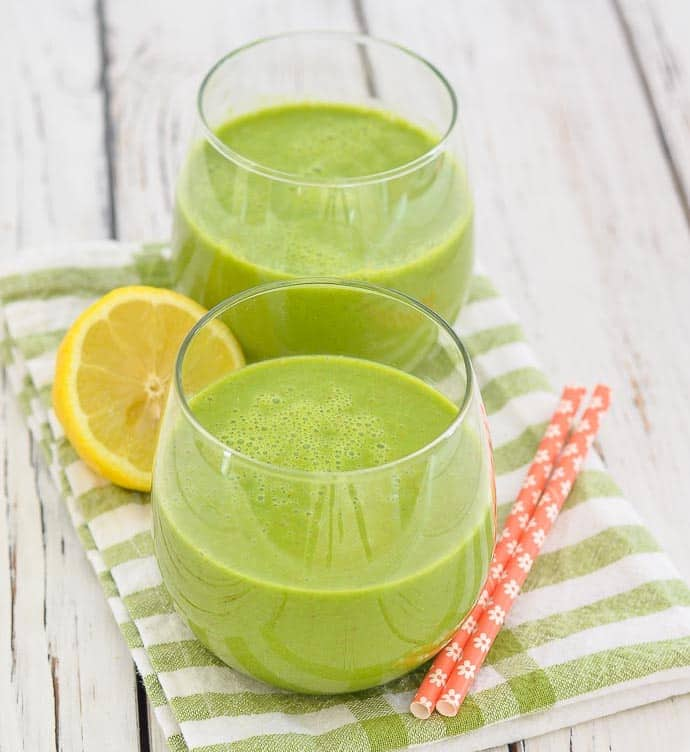

Apples help lower your risk of diabetes. A recent study has found that people who ate three servings per week of apples, grapes, raisins, blueberries or pears had a 7% lower risk of developing type 2 diabetes compared to those who did not.
Research has shown that including apples in your daily diet may protect neuron cells against oxidative stress-induced neurotoxicity and may play an important role in reducing the risk of neurodegenerative disorders such as Alzheimer's disease.
It is said that apple juice consumption may increase the production in the brain of the essential neurotransmitter acetylcholine, resulting in improved memory among mice who have Alzheimer's-like symptoms.
This is another smoothie which can get you feeling ready for Christmas minus the guilt. A truly delicious and filling drink that will get you in the Christmas mood whilst also giving your body the health kick it deserves.
The health benefits of apples, I believe, often go under the radar. They are an amazing food for weight loss, the high levels of fibre and water means that your appetite will be suppressed for longer; stopping you from reaching for those snacks. This fibre is also great for your heart as is lowers your blood cholesterol.